정보처리기사(구) (2003-03-16 기출문제)
1과목: 데이터 베이스
1. 시스템 카탈로그에 대한 설명 중 옳지 않은 것은?
- 시스템 그 자체에 관련이 있는 다양한 객체들에 관한 정보를 포함하는 파일 시스템이다.
- 분산시스템에서 카탈로그는 보통의 릴레이션, 인덱스, 사용자 등의 정보를 포함할 뿐 아니라 위치 단편화 및 중복 독립성을 제공하기 위해 필요한 모든 제어 정보를 가져야 한다.
- 관계형 시스템에서 시스템 이벤트와 데이터베이스는 다르며, 서로 다른 인터페이스를 통해 접근한다.
- 관계형 시스템에서 카탈로그 역시 보통의 질의문을 사용하여 질의할 수 있다.
(정답률: 44%)

2. 한 작업의 논리적 단위가 성공적으로 끝났고, 데이터베이스가 다시 일관된 상태에 있으며, 이 트랜잭션이 행한 갱신 연산이 완료된 것을 트랜잭션 관리자에게 알려주는 연산은?
- ROLLBACK 연산
- LOG 연산
- COMMIT 연산
- BACKUP 연산
(정답률: 77%)
3. DBA의 여러 업무 중 시스템 감시 및 성능분석 업무 내용에 해당되지 않는 것은?
- 사용자 요구 변화 분석
- 장비성능 감시
- 백업/회복 절차 이행
- 데이터 사용 추세 분석
(정답률: 42%)
4. 관계 데이터 모델에서 릴레이션(relation)에 포함되어 있는 튜플(tuple)의 수를 무엇이라고 하는가?
- 차수(degree)
- 카디널리티(cardinality)
- 속성수(attribute value)
- 카티션 프로덕트(cartesian product)
(정답률: 78%)
5. 트랜잭션은 자기의 연산에 대하여 전부(all) 또는 전무(nothing) 실행만이 존재하며, 일부 실행으로는 트랜잭션의 기능을 가질 수 없다는 트랜잭션의 특성은?
- consistency
- atomicity
- isolation
- durability
(정답률: 73%)
6. 다음 설명이 의미하는 내용과 가장 관련된 것은?
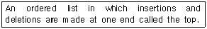
- stack
- queue
- array
- tree
(정답률: 78%)
7. 현실 세계에 존재하는 개체를 인간이 이해할 수 있는 정보 구조로 표현하는 과정을 무엇이라 하는가?
- 데이터 모델링(data modeling)
- 정보 모델링(information modeling)
- 데이터 구조화(data structuring)
- 정보 구조화(information structuring)
(정답률: 34%)
8. 비선형 구조와 선형 구조가 옳게 짝지어진 것은?
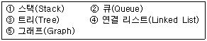
- 비선형 구조: ①,②,⑤ 선형 구조: ③,④
- 비선형 구조: ③,⑤ 선형 구조: ①,②,④
- 비선형 구조: ①,②,③ 선형 구조: ④,⑤
- 비선형 구조: ③ 선형 구조: ①,②,④,⑤
(정답률: 81%)
9. 관계 데이터 모델링에서 정규화(Normalization)를 하는 이유로 거리가 먼 것은?
- 가능하다면 모든 개체간의 관계를 표현하기 위해서
- 개체간의 종속성을 가급적 피하기 위해서
- 정보의 중복을 피하기 위해서
- 정보의 검색을 보다 용이하게 하기 위해서
(정답률: 43%)
10. 아래의〔인사〕테이블과〔차량〕테이블을 이용하여 SQL문을 수행했을 경우의 결과는?
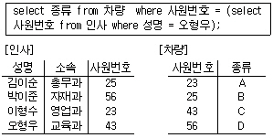
- 43
- 56
- C
- D
(정답률: 81%)
11. 아래 보기의 자료에서 이진탐색(binary search)을 적용할 경우 E를 찾기 위한 비교횟수는?
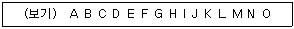
- 3
- 4
- 5
- 6
(정답률: 56%)
12. 다음 문장의 괄호 안에 적합한 것은?
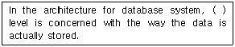
- the conceptual
- the external
- the hardware
- the internal
(정답률: 50%)
13. 다음 그림은 E-R 도의 예를 나타낸다. 그림에 나타난 구성 요소와 그 설명이 틀린 것은?
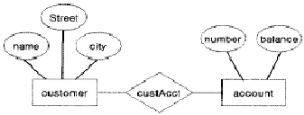
- 사각형 - 개체(entity) 집합을 나타낸다.
- 타원 - 개체(entity)를 나타낸다.
- 마름모 - 개체(entity) 집합간의 관계를 나타낸다.
- 선(line) - 속성과 개체(entity) 집합을 연결하며, 개체 집합과 관계(relation)를 연결한다.
(정답률: 71%)
14. 이진트리의 레코드 R=(88,74,63,55,37,25,33,19, 26,14,9)에 대하여 힙(heap) 정렬을 만들 때 37의 왼쪽과 오른쪽의 자노드(child node)의 값은?
- 55, 25
- 63, 33
- 33, 19
- 14, 9
(정답률: 35%)
15. SQL문에서 STUDENT(SNO, SNAME, YEAR, DEPT) 테이블에 "학번 600, 성명 홍길동, 학년 2학년"인 학생 튜플을 삽입하는 명령으로 옳은 것은? (단, SNO는 학번, SNAME은 성명, YEAR는 학년, DEPT는 학생, 교수 구분 필드임.)
- INSERT STUDENT INTO VALUES (600, '홍길동', 2);
- INSERT FROM STUDENT VALUES (600, '홍길동', 2);
- INSERT INTO STUDENT(SNO, SNAME, YEAR) VALUES (600, '홍길동', 2);
- INSERT TO STUDENT(SNO, SNAME, YEAR) VALUES (600, '홍길동', 2);
(정답률: 71%)
16. 데이터베이스의 설계 과정을 올바르게 나열한 것은?
- 요구조건 분석→개념적 설계→물리적 설계→논리적 설계
- 요구조건 분석→개념적 설계→논리적 설계→물리적 설계
- 요구조건 분석→논리적 설계→개념적 설계→물리적 설계
- 요구조건 분석→물리적 설계→개념적 설계→논리적 설계
(정답률: 83%)
17. 분산 DBMS의 4대 목표에 대한 설명으로 거리가 먼 것은?
- 위치 투명성(location transparency) : 트랜잭션은 특정 데이터 항목의 위치에 의존적임.
- 중복 투명성(replication transparency) : 트랜잭션이 데이터의 중복 개수나 중복 사실을 모르고도 데이터 처리가 가능함.
- 병행 투명성(concurrency transparency) : 분산 데이터베이스와 관련된 다수의 트랜잭션들이 동시에 실현되더라도 그 트랜잭션의 결과는 영향을 안 받음.
- 장애 투명성(failure transparency) : 트랜잭션, DBMS, 네트워크, 컴퓨터 장애에도 불구하고 트랜잭션을 정확하게 처리함.
(정답률: 54%)
18. 3단계 데이터베이스에서 데이터에 대한 접근 권한, 보안정책, 무결성 규칙들이 포함되는 스키마는?
- 외부 스키마
- 개념 스키마
- 내부 스키마
- 서브 스키마
(정답률: 51%)
19. 아래 그림에서 트리의 차수(degree)를 구하면?
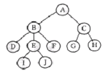
- 2
- 3
- 4
- 5
(정답률: 69%)
20. 도메인(Domain)에 대한 설명으로 옳은 것은?
- 튜플들의 관계를 표현하는 범위
- 한 속성이 취할 수 있는 모든 값의 집합
- 한 릴레이션이 갖는 한 열의 레코드 값
- 물리적 레코드가 가지고 있는 모든 정보
(정답률: 66%)
2과목: 전자 계산기 구조
21. 명령어 형식(instruction format)이 opcode, addressing mode, address의 3부분으로 되어있는 컴퓨터에서 주기억장치가 1024 워드일 경우 명령의 크기는 몇 비트로 구성되어야 하는가?(단, op-code는 4비트 이며, addressing mode는 직접 및 간접주소지정방식 구분에만 사용한다라고 가정한다.)
- 10
- 15
- 20
- 25
(정답률: 37%)
22. 어떤 computer의 메모리 용량은 1024word이고 1word는 16bit로 구성되어 있다면 MAR과 MBR은 몇 bit로 구성되어 있는가?
- MAR=10, MBR=8
- MAR=10, MBR=16
- MAR=11, MBR=8
- MAR=11, MBR=16
(정답률: 72%)
23. 명령을 수행하는 과정에서 우선적으로 이루어져야 하는 것은?
- PC← PC+1
- IR← MBR
- MAR← PC
- MBR← PC
(정답률: 66%)
24. 다음 회로는 무엇인가?
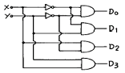
- decoder
- multiplexer
- encoder
- shifter
(정답률: 67%)
25. 메모리에 저장된 항목을 찾는데 주소를 사용하는 것이 아니라 기억된 정보의 일부분을 이용하여 원하는 정보에 접근할 수 있는 기억장치는?
- Virtual Memory
- Cache Memory
- Associative Memory
- Multiple Module Memory
(정답률: 63%)
26. 인터럽트 요청신호 플래그를 차례로 검사하여 인터럽트의 원인을 판별하는 방식은?
- 스트로브 방식
- 데이지체인 방식
- 폴링 방식
- 하드웨어 방식
(정답률: 46%)
27. 두 개의 데이터를 섞거나 일부에 삽입하는데 사용되는 연산은?
- AND 연산
- OR 연산
- MOVE 연산
- Complement 연산
(정답률: 56%)
28. 연상(associative) 기억장치의 특징이 아닌 것은?
- 기억된 정보의 일부분을 이용하여 원하는 정보가 기억된 위치를 알아낸 후 나머지 정보에 접근한다.
- 주소에 의해서만 접근이 가능한 기억장치보다 정보검색이 신속하다.
- 하드웨어 비용이 절감된다.
- 병렬 판독 회로가 있어야 한다.
(정답률: 54%)
29. 프로그램 수행 중에 인터럽트가 발생하였을 경우 인터럽트의 처리 시기는?
- 발생 즉시 처리한다.
- 수행 중인 프로그램을 완료하고 처리한다.
- 수행 중인 인스트럭션을 끝내고 처리한다.
- 수행 중인 마이크로 오퍼레이션을 끝내고 처리한다.
(정답률: 39%)
30. 내부 인터럽트의 원인이 아닌 것은?
- 정전
- 불법적인 명령의 실행
- Overflow 또는 0으로 나누는 경우
- 보호 영역 내의 메모리 어드레스를 Access 하는 경우
(정답률: 68%)
31. 가상기억장치(virtual memory)의 가장 큰 목적은?
- 접근시간의 단축
- 주소공간의 확대
- 주소지정 방식의 탈피
- 동시에 여러 단어의 탐색
(정답률: 71%)
32. 동시에 양쪽 방향으로 전송이 가능한 전송 방식은?
- Simplex
- Half-duplex
- Full-duplex
- on-line
(정답률: 77%)
33. 프로그래머가 어셈블리 언어(Assembly language)로 프로그램을 작성할 때 반복되는 일련의 같은 연산을 효과적으로 하기 위해 필요한 것은?
- 매크로(MACRO)
- 함수(function)
- reserved instruction set
- 마이크로 프로그래밍(micro-programming)
(정답률: 74%)
34. 2진수 0011에서 2의 보수(2's complement)는?
- 1100
- 1110
- 1101
- 0111
(정답률: 68%)
35. 중앙연산처리장치에서 micro-operation이 순서적으로 일어나게 하려면 무엇이 필요한가?
- 스위치(switch)
- 레지스터(register)
- 누산기(accumulator)
- 제어신호(control signal)
(정답률: 58%)
36. 다음 연산회로에서 S1S0=11 이고, Ci=1일 때 FA회로출력 F는?
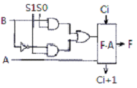
- F=A+B+1
- F=A+B'+1
- F=A+1
- F=A
(정답률: 34%)
37. O-주소 인스트럭션 형식을 사용하는 컴퓨터의 특징은?
- 연산 후에 입력 자료가 변하지 않고 보존된다.
- 연산에 필요한 자료의 주소를 모두 구체적으로 지정해 주어야 한다.
- 모든 연산은 스택에 있는 자료를 이용하여 수행한다.
- 연산을 위해 입력자료의 주소만을 지정해 주면 된다.
(정답률: 54%)
38. 기억 장치에서 인스트럭션을 읽어서 중앙처리장치로 가져올 때 중앙처리장치와 제어기는 어떤 상태인가?
- 인출(fetch) 상태
- 실행(execute) 상태
- 간접(indirect) 상태
- 인터럽트(interrupt) 상태
(정답률: 57%)
39. op-code의 기능이 아닌 것은?
- 주소지정
- 함수연산
- 전달
- 제어
(정답률: 46%)
40. 3-cycle 인스트럭션에 속할 수 없는 것은?
- ADD
- JUMP
- LOAD
- STORE
(정답률: 51%)
3과목: 운영체제
41. 로더(loader)의 기능이 아닌 것은?
- Allocation
- Linking
- Relocation
- Compile
(정답률: 66%)
42. 버퍼링과 스풀링에 대한 설명으로 옳지 않은 것은?
- 버퍼링은 저속의 입출력 장치와 고속의 CPU간의 속도 차를 해소하기 위해서 나온 방법이다.
- 스풀링은 디스크 일부를 매우 큰 버퍼처럼 사용하는 방법이다.
- 스풀링은 어떤 작업의 입/출력과 다른 작업의 계산을 병행 처리하는 기법이다.
- 버퍼링은 보조기억장치를 버퍼로 사용한다.
(정답률: 47%)
43. 비선점(Non-Preemptive) 스케줄링에 해당하지 않는 것은?
- SRT(Shortest Remaining Time)
- FIFO(First In First Out)
- SJF(Shortest Job First)
- HRN(Highest Response-ratio Next)
(정답률: 48%)
44. 디스크 스케줄링에서 SSTF(Shortest Seek Time First)에 대한 설명으로 옳지 않은 것은?
- 탐색 거리가 가장 짧은 요청이 먼저 서비스를 받는다
- 일괄처리 시스템 보다는 대화형 시스템에 적합하다.
- 가운데 트랙이 안쪽이나 바깥쪽 트랙보다 서비스 받을 확률이 높다.
- 헤드에서 멀리 떨어진 요청은 기아상태(starvation)가 발생할 수 있다.
(정답률: 44%)
45. 시간 구역성(locality)과 관련이 적은 것은?
- counting
- subroutine
- array
- stack
(정답률: 44%)
46. UNIX에서 프로세스를 생성하는 시스템 호출문은?
- exec
- fork
- pipe
- signal
(정답률: 69%)
47. 공유자원을 어느 시점에서 단지 한개의 프로세스만이 사용할 수 있도록 하며 다른 프로세스가 공유자원에 대하여 접근하지 못하게 제어하는 기법은?
- mutual exclusion
- critical section
- deadlock
- scatter loading
(정답률: 36%)
48. PCB(process control block)에 포함되는 정보가 아닌 것은?
- 프로세스의 현상태
- 프로세스 고유 구별자
- 프로세스의 우선순위
- 파일할당 테이블(FAT)
(정답률: 65%)
49. 페이지 오류율(page fault ratio)과 스래싱(thrashing)에 대한 설명으로 옳은 것은?
- 페이지 오류율이 크면 스래싱이 많이 발생한 것이다.
- 페이지 오류율과 스래싱은 전혀 관계가 없다.
- 스래싱이 많이 발생하면 페이지 오류율이 감소한다.
- 다중프로그래밍의 정도가 높을수록 페이지 오류율과 스래싱이 감소한다.
(정답률: 49%)
50. 효율적인 주기억장치의 접근을 위하여 기억장소의 연속된 위치를 서로 다른 뱅크로 구성하여 하나의 주소를 통하여 여러 개의 위치에 해당하는 기억 장소를 접근할 수 있도록 하는 방법은?
- 인터리빙(Interleaving)
- 스풀링(Spooling)
- 버퍼링(Buffering)
- 카운팅(Counting)
(정답률: 66%)
51. 분산시스템에 대한 설명으로 거리가 먼 것은?
- 다수의 사용자들이 데이터를 공유할 수 있다.
- 다수의 사용자들 간에 통신이 용이하다.
- 귀중한 장치들이 다수의 사용자들에 의해 공유될 수 있다.
- 집중형(centralized) 시스템에 비해 소프트웨어의 개발이 용이하다.
(정답률: 71%)
52. 파일 구성 방식 중 ISAM(Indexed Sequential Access-Method)의 물리적인 색인 구성은 디스크의 물리적 특성에 따라 색인(index)을 구성하는데, 다음 중 3단계 색인에 해당되지 않는 것은?
- 실린더 색인(cylinder index)
- 트랙 색인(track index)
- 마스터 색인(master index)
- 볼륨 색인(volume index)
(정답률: 66%)
53. 운영체제에 대한 설명으로 옳지 않은 것은?
- 다중 사용자, 다중 응용프로그램간의 하드웨어 사용을 제어하고 조정한다.
- CPU, 메모리 공간, 파일 기억 장치, 입출력 장치 등의 자원을 관리한다.
- 컴파일러, 데이터베이스 시스템은 운영체제의 일부분이다.
- 입, 출력 장치와 사용자 프로그램을 제어한다.
(정답률: 64%)
54. 다음 설명과 가장 밀접한 분산운영체제의 구조는?
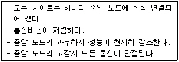
- ring connection
- star connection
- hierachy connection
- partially connection
(정답률: 69%)
55. UNIX 파일 시스템의 inode에서 관리하는 정보가 아닌 것은?
- 파일의 링크수
- 파일이 만들어진 시간
- 파일의 크기
- 파일이 최초로 수정된 시간
(정답률: 68%)
56. 페이지 기법에 대한 설명으로 옳지 않은 것은?
- 페이지 크기가 작으면 페이지 테이블의 공간이 작게 요구된다.
- 지역성(locality) 이론에 따라 작은 크기의 페이지가 효과적이다.
- 입출력 전송시 큰 페이지가 효율적이다.
- 페이지가 크면 단편화(fragmentation)로 인해 많은 기억 공간을 낭비하게 된다.
(정답률: 50%)
57. UNIX 시스템에서 커널에 대한 설명으로 옳지 않은 것은?
- UNIX 시스템의 중심부에 해당한다.
- 사용자와 시스템 간의 인터페이스를 제공한다.
- 프로세스 관리, 기억장치 관리 등을 담당한다.
- 하드웨어를 캡슐화한다.
(정답률: 38%)
58. 실행 중인 프로세스가 일정 시간 동안에 참조하는 페이지의 집합을 의미하는 것은?
- working set
- locality
- fragmentation
- segment
(정답률: 67%)
59. 스케줄링의 목적으로 거리가 먼 것은?
- 모든 작업들에 대해 공평성을 유지하기 위하여
- 단위시간당 처리량을 최대화하기 위하여
- 응답시간을 빠르게 하기 위하여
- 운영체제의 오버헤드를 최대화하기 위하여
(정답률: 68%)
60. 운영체제를 기능상으로 분류했을 때, 제어 프로그램 중 보기의 설명에 해당하는 것은?
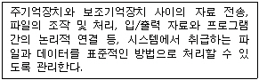
- 문제 프로그램(problem program)
- 감시 프로그램(supervisor program)
- 작업 제어 프로그램(job control program)
- 데이터 관리 프로그램(data management program)
(정답률: 55%)
4과목: 소프트웨어 공학
61. 모듈을 이루고 있는 각 요소들이 공통의 목적을 달성하기 위하여 얼마나 관련이 있는가를 나타내는 것을 무엇이라고 하는가?
- 결합도(coupling)
- 응집도(cohesion)
- 구조도(structure)
- 일치도(unity)
(정답률: 51%)
62. 소프트웨어 리엔지니어링(reengineering)의 목표 중 거리가 먼 것은?
- 복잡한 시스템을 다루는 방법 구현
- 다른 뷰의 생성
- 기존 시스템의 해킹
- 잃어버린 정보의 복구 및 제거
(정답률: 65%)
63. 객체지향 시스템에서 전통적 시스템의 함수(function) 또는 프로시저(procedure)에 해당하는 연산기능을 무엇이라고 하는가?
- 메소드(method)
- 메시지(message)
- 모듈(module)
- 패키지(package)
(정답률: 71%)
64. 현재 소프트웨어 개발 중 가장 많은 비용이 요구되는 단계는?
- 분석
- 설계
- 구현
- 유지보수
(정답률: 75%)
65. 프로젝트 계획 수립을 시작할 때 제일 먼저 해야 하는 작업은?
- 개발완료 날짜 파악
- 과거의 데이터를 분석하는 일
- 개발 비용 산정
- 프로젝트의 규모 파악
(정답률: 70%)
66. 모듈을 설계하기 위해서 바람직한 응집도(cohesion)와 결합도(coupling)의 관계는?
- 응집도는 약하고 결합도는 강해야 한다.
- 응집도는 강하고 결합도는 약해야 한다.
- 응집도도 약하고 결합도도 약해야 한다.
- 응집도도 강하고 결합도도 강해야 한다.
(정답률: 69%)
67. 한 모듈이 다른 모듈의 내부 기능 및 그 내부 자료를 참조하는 경우, 이를 무슨 결합이라고 하는가?
- 내용 결합
- 제어 결합
- 공통 결합
- 스탬프 결합
(정답률: 64%)
68. 검증 시험(Validation Test)을 하는데 있어 알파 테스트(Alpha Test)란?
- 사용자의 장소에서 개발자가 직접 시험을 한다.
- 사용자의 장소에서 개발자와 사용자가 실 데이터를 가지고 공동으로 시험한다.
- 개발자의 장소에서 개발자가 시험을 하고 사용자는 지켜본다.
- 개발자의 장소에서 사용자가 시험을 하고 개발자는 뒤에서 결과를 지켜본다.
(정답률: 51%)
69. 비용예측 방법에서 원시 프로그램의 규모에 의한 방법(COCOMO model)중 일괄자료처리나 과학기술계산용, 비즈니스 자료처리용의 5만 라인 이하의 중소 규모 소프트웨어를 개발하는 유형에 해당되는 것은?
- Organic 프로젝트
- Semidetached 프로젝트
- Embeded 프로젝트
- Sequential 프로젝트
(정답률: 44%)
70. 객체지향 기법에서 메소드(method)는 어느 시점에 시작되어 지는가?
- 사용자 명령어(command)가 입력될 때
- OS(operating system)에 의하여 인터럽트가 감지될 때
- 특별한 데이터 값을 만날 때
- 오브젝트로 부터 메시지를 받을 때
(정답률: 53%)
71. 외계인 코드(Alien Code)를 방지하기 위한 방법으로 가장 적합한 것은?
- 프로그램 내에 문서화를 철저하게 해 두어야 한다.
- 자료흐름도(DFD)를 상세히 그려야 한다.
- 프로그램 완성시 testing을 확실하게 해야 한다.
- 프로그램시 반드시 visual tool을 사용해야 한다.
(정답률: 56%)
72. 소프트웨어 설계를 위한 지침에 대한 설명으로 거리가 먼 것은?
- 소프트웨어 요소간의 효과적 제어를 위해 설계에서 계층적 자료조직이 제시되어야 한다.
- 설계는 종속적인 기능적 특성을 가진 모듈화로 유도되어야 한다.
- 소프트웨어는 논리적으로 특별한 기능과 부기능을 수행하는 요소들로 나누어져야 한다.
- 설계는 자료와 프로시저에 대한 분명하고 분리된 표현을 포함해야 한다.
(정답률: 58%)
73. 프로토타입 모형의 장점으로 가장 적절한 것은?
- 프로젝트 관리가 용이하다.
- 노력과 비용이 절감된다.
- 요구사항을 충실히 반영한다.
- 관리와 개발이 명백히 구분된다.
(정답률: 67%)
74. 폭포수 모형(waterfall model)의 진행 단계로 옳은 것은?
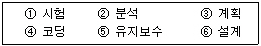
- ①-②-③-④-⑤-⑥
- ②-⑥-④-⑤-①-③
- ③-②-⑥-④-①-⑤
- ④-①-②-⑥-⑤-③
(정답률: 77%)
75. 다음은 프로그램 구조를 나타낸다. 모듈 F에서의 fan-in과 fan-out의 수는 얼마인가?
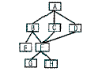
- fan-in: 2 fan-out:3
- fan-in: 3 fan-out:2
- fan-in: 1 fan-out:2
- fan-in: 2 fan-out:1
(정답률: 64%)
76. 소프트웨어 개발비용은 다른 여러 가지 요소들과 일정한 상관관계가 있다. 다음 그래프의 y축을 개발비용이라고 했을 때, x축은 어떤 요소라고 보는 것이 가장 타당한가?
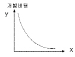
- 시스템 크기
- 개발기간
- 신뢰도
- 투입 인력
(정답률: 62%)
77. 소프트웨어 재사용에 대한 설명으로 옳지 않은 것은?
- 개발 시간과 비용을 감소시킨다.
- 프로젝트 실패의 위험을 줄여 준다.
- 재사용 부품의 크기가 작을수록 재사용 확률이 낮다.
- 소프트웨어 개발자의 생산성을 증가시킨다.
(정답률: 74%)
78. 화이트박스 테스트 기법에 해당되는 것은?
- Equivalence partitioning
- Boundary value analysis
- Cause and effect graphing
- Condition coverage
(정답률: 41%)
79. Rumbaugh의 모델링에서 상태도와 자료흐름도는 각각 어느 모델링과 관련이 있는가?
- 상태도--기능 모델링, 자료흐름도--동적 모델링
- 상태도--객체 모델링, 자료흐름도--기능 모델링
- 상태도--객체 모델링, 자료흐름도--동적 모델링
- 상태도--동적 모델링, 자료흐름도--기능 모델링
(정답률: 47%)
80. 클라이언트/서버(Client/Server) 모델에서의 소프트웨어 개발에 대한 설명으로 옳지 않은 것은?
- 사용자의 요구사항은 서버의 데이터베이스 시스템에 영향을 미친다.
- 병목현상을 없애기 위해 비즈니스 로직을 분리하여 관리할 수 있다.
- 미들웨어의 사용은 서버와 클라이언트의 작업량을 증가시켰다.
- 대부분 네트워크로 연결되어 있고 인증 작업을 필요로 한다.
(정답률: 63%)
5과목: 데이터 통신
81. LAN(Local Area Network)의 특징으로 옳지 않은 것은?
- 오류 발생율이 낮다.
- 통신 거리에 제한이 없다.
- 경로 선택이 필요하지 않다.
- 망에 포함된 자원을 공유한다.
(정답률: 71%)
82. 아래의 제어 절차 중 전송제어 절차가 옳은 것은?
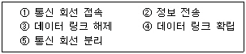
- ①→④→②→③→⑤
- ⑤→④→③→①→②
- ②→①→③→④→⑤
- ④→②→①→③→⑤
(정답률: 80%)
83. 자기 정정 부호의 하나로 비트 착오를 검출해서 1 bit 착오를 정정하는 부호 방식은?
- parity code
- hamming code
- ASCII code
- EBCDIC code
(정답률: 54%)
84. 슬라이딩 윈도우 프로토콜에서 송신 윈도우가 증가하는 경우는 언제인가?
- 송신측으로부터 이전에 송신한 프레임에 대한 긍정 수신 응답이 왔을 때
- 수신측으로부터 이전에 송신한 프레임에 대한 긍정 수신 응답이 왔을 때
- 수신측으로부터 이전에 송신한 프레임에 대한 부정 수신 응답이 왔을 때
- 증가되지 않는다.
(정답률: 50%)
85. 첫째 터미널은 1200[bps], 두 번째 터미널은 2400[bps]로 동작한다고 할 때, 데이터가 공동 통신 채널을 통해 전송될 수 있는 최소 속도는?
- 1200[bps]
- 1800[bps]
- 2400[bps]
- 3600[bps]
(정답률: 39%)
86. 프로토콜이란?
- 통신 하드웨어의 표준 규격이다.
- 통신 소프트웨어의 개발 환경이다.
- 정보 전송의 통신 규약이다.
- 하드웨어와 사람 사이의 인터페이스이다.
(정답률: 68%)
87. 동기 전송에서 주로 사용되는 에러 검출 방법은?
- Parity bit
- Word parity
- Hamming code
- CRC
(정답률: 39%)
88. 프로토콜의 기본적인 요소가 아닌 것은?
- 구문
- 타이밍
- 제어
- 의미
(정답률: 40%)
89. IP(인터넷 프로토콜)의 주요 임무가 아닌 것은?
- 호스트의 주소 지정
- 패킷 절단
- 전송 경로의 논리적 관리
- 전송 패킷의 안정성 관여
(정답률: 34%)
90. 패킷 교환망의 주요 기능 중 하나는 이용자들의 패킷통신을 위한 경로 배정(routing control)이다. 다음 중 패킷 교환기에 들어가는 경로 배정 프로그램 작성시 경로배정 요소(parameter)가 아닌 것은?
- 성능 기준
- 경로의 결정 시간과 장소
- 프로그램 처리 속도
- 네트워크 정보 발생지
(정답률: 34%)
91. IEEE에 의한 LAN은 OSI 7계층 구조상 어느 부분에 위치하고 있나?
- 물리 계층과 데이터링크 계층
- 데이터링크 계층과 네트웍 계층
- 네트웍 계층과 전송 계층
- 전송 계층과 세션 계층
(정답률: 42%)
92. 문자동기 전송방식에서 데이터 투과성(Data Transparent)을 위해 삽입되는 제어문자는?
- ETX
- STX
- DLE
- SYN
(정답률: 57%)
93. 전송 채널 상에서 발생하는 왜곡(distortion) 중 채널 상에서 언제든지 발생할 수 있는 시스템적인 왜곡(systematic distortion)은?
- 손실
- 충격성 잡음
- 백색 잡음
- 상호변조 잡음
(정답률: 40%)
94. IP address에서 네트워크 ID와 호스트 ID를 구별하는 방식은?
- 서브넷 마스크
- 클래스 E
- 클래스 D
- IPv6
(정답률: 64%)
95. 송신기에서 발생된 정보의 정확한 전송을 위해 사용자 정보에 헤더(header)와 트레일러(trailer)를 부가하는 과정을 무엇이라 하는가?
- 정보의 조립
- 정보의 분할
- 정보의 캡슐화
- 정보의 다중화
(정답률: 53%)
96. 시분할 교환기술의 방식이 아닌 것은?
- TDM 버스 교환 방식
- 메트릭스 방식
- 타임슬롯 교환 방식
- 시간 다중화 교환 방식
(정답률: 60%)
97. 메시지 교환의 특징 중 옳지 않은 것은?
- 각 메시지마다 전송 경로가 다르다.
- 데이터의 전송 지연 시간이 매우 짧다.
- 네트워크에서 속도나 코드 변환이 가능하다.
- 각 메시지마다 수신 주소를 붙여서 전송한다.
(정답률: 37%)
98. 프레임(framing) 동기의 목적은?
- 누화 방지
- 펄스 안정화
- 각 통화로의 혼선 방지
- 잡음 방지
(정답률: 48%)
99. 전송하려는 신호의 필요한 대역폭보다 전송매체의 유효대역폭이 클 때 사용하는 다중화 방식은?
- 주파수 분할 다중화
- 동기 시분할 다중화
- 통계 시분할 다중화
- 비동기 시분할 다중화
(정답률: 44%)
100. IP 주소와 호스트 이름 간의 변환을 제공하는 분산 데이터베이스를 무엇이라고 하는가?
- DNS
- NFS
- 라우터
- 웹 서버
(정답률: 64%)